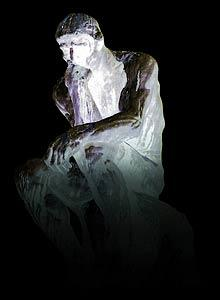

The Future
- Futures Portal
- One Future Vision
- Post Human Futures
- Distant Future
- Other Visions
- Future Homo Sapiens
- Future Quotes
Future Studies
What is Critical Thinking ?

The intellectual roots of critical thinking are as ancient as its etymology, traceable, ultimately, to the teaching practice and vision of Socrates 2,500 years ago who discovered by a method of probing questioning that people could not rationally justify their confident claims to knowledge. Confused meanings, inadequate evidence, or self-contradictory beliefs often lurked beneath smooth but largely empty rhetoric. Socrates established the fact that one cannot depend upon those in "authority" to have sound knowledge and insight. He demonstrated that persons may have power and high position and yet be deeply confused and irrational. He established the importance of asking deep questions that probe profoundly into thinking before we accept ideas as worthy of belief.
Socrates established the importance of seeking evidence, closely examining reasoning and assumptions, analyzing basic concepts, and tracing out implications not only of what is said but of what is done as well. His method of questioning is now known as "Socratic questioning" and is the best known critical thinking teaching strategy. In his mode of questioning, Socrates highlighted the need in thinking for clarity and logical consistency.
Socrates set the agenda for the tradition of critical thinking, namely, to reflectively question common beliefs and explanations, carefully distinguishing those beliefs that are reasonable and logical from those which--however appealing they may be to our native egocentrism, however much they serve our vested interests, however comfortable or comforting they may be-lack adequate evidence or rational foundation to warrant our belief.
Socrates' practice was followed by the critical thinking of Plato (who recorded Socrates' thought), Aristotle, and the Greek skeptics, all of whom emphasized that things are often very different from what they appear to be and that only the trained mind is prepared to see through the way things look to us on the surface (delusive appearances) to the way they really are beneath the surface (the deeper realities of life). From this ancient Greek tradition emerged the need, for anyone who aspired to understand the deeper realities, to think systematically, to trace implications broadly and deeply, for only thinking that is comprehensive, well-reasoned, and responsive to objections can take us beyond the surface.
In the middle ages, the tradition of systematic critical thinking was embodied in the writings and teachings of such thinkers as Thomas Aquinas (Sumna Theologica) who to ensure his thinking met the test of critical thought-always systematically stated, considered, and answered all criticisms of his ideas as a necessary stage in developing them. Aquinas heightened our awareness not only of the potential power of reasoning but also of the need for reasoning to be systematically cultivated and "cross-examined." Of course, Aquinas' thinking also illustrates that those who think critically do not always reject established beliefs, only those beliefs that lack reasonable foundations.
In the Renaissance (15th and 16th Centuries), a flood of scholars in Europe began to think critically about religion, art, society, human nature, law, and freedom. They proceeded with the assumption that most of the domains of human life were in need of searching analysis and critique. Among these scholars were Colet, Erasmus, and More in England. They followed up on the insight of the ancients.
Francis Bacon, in England, was explicitly concerned with the way we misuse our minds in seeking knowledge. He recognized explicitly that the mind cannot safely be left to its natural tendencies. In his book The Advancement of Learning, he argued for the importance of studying the world empirically. He laid the foundation for modern science with his emphasis on the information-gathering processes. He also called attention to the fact that most people, if left to their own devices, develop bad habits of thought (which he called "idols") that lead them to believe what is false or misleading. He called attention to "Idols of the tribe" (the ways our mind naturally tends to trick itself), "Idols of the market-place" (the ways we misuse words), "Idols of the theater" (our tendency to become trapped in conventional systems of thought), and "Idols of the schools" (the problems in thinking when based on blind rules and poor instruction). His book could be considered one of the earliest texts in critical thinking, for his agenda was very much the traditional agenda of critical thinking.
Some fifty years later in France , Descartes wrote what might be called the second text in critical thinking, Rules For the Direction of the Mind. In it, Descartes argued for the need for a special systematic disciplining of the mind to guide it in thinking. He articulated and defended the need in thinking for clarity and precision. He developed a method of critical thought based on the principle of systematic doubt. He emphasized the need to base thinking on well-thought through foundational assumptions. Every part of thinking, he argued, should be questioned, doubted, and tested.
In the same time period, Sir Thomas More developed a model of a new social order, Utopia, in which every domain of the present world was subject to critique. His implicit thesis was that established social systems are in need of radical analysis and critique. The critical thinking of these Renaissance and post-Renaissance scholars opened the way for the emergence of science and for the development of democracy, human rights, and freedom for thought.
In the Italian Renaissance, Machiavelli's The Prince critically assessed the politics of the day, and laid the foundation for modern critical political thought. He refused to assume that government functioned as those in power said it did. Rather, he critically analyzed how it did function and laid the foundation for political thinking that exposes both, on the one hand, the real agendas of politicians and, on the other hand, the many contradictions and inconsistencies of the hard, cruel, world of the politics of his day
Hobbes and Locke (in 16th and 17th Century England) displayed the same confidence in the critical mind of the thinker that we find in Machiavelli. Neither accepted the traditional picture of things dominant in the thinking of their day. Neither accepted as necessarily rational that which was considered "normal" in their culture. Both looked to the critical mind to open up new vistas of learning. Hobbes adopted a naturalistic view of the world in which everything was to be explained by evidence and reasoning. Locke defended a common sense analysis of everyday life and thought. He laid the theoretical foundation for critical thinking about basic human rights and the responsibilities of all governments to submit to the reasoned criticism of thoughtful citizens.
It was in this spirit of intellectual freedom and critical thought that people such as Robert Boyle (in the 17th Century) and Sir Isaac Newton (in the 17th and 18th Century) did their work. In his Sceptical Chymist, Boyle severely criticized the chemical theory that had preceded him. Newton, in turn, developed a far-reaching framework of thought which roundly criticized the traditionally accepted world view. He extended the critical thought of such minds as Copernicus, Galileo, and Kepler. After Boyle and Newton, it was recognized by those who reflected seriously on the natural world that egocentric views of world must be abandoned in favor of views based entirely on carefully gathered evidence and sound reasoning .
Another significant contribution to critical thinking was made by the thinkers of the French enlightenment: Bayle, Montesquieu, Voltaire, and Diderot. They all began with the premise that the human mind, when disciplined by reason, is better able to figure out the nature of the social and political world. What is more, for these thinkers, reason must turn inward upon itself, in order to determine weaknesses and strengths of thought. They valued disciplined intellectual exchange, in which all views had to be submitted to serious analysis and critique. They believed that all authority must submit in one way or another to the scrutiny of reasonable critical questioning.
Eighteenth Century thinkers extended our conception of critical thought even further, developing our sense of the power of critical thought and of its tools. Applied to the problem of economics, it produced Adam Smith's Wealth of Nations. In the same year, applied to the traditional concept of loyalty to the king, it produced the Declaration of Independence. Applied to reason itself, it produced Kant's Critique of Pure Reason.
In the 19th Century, critical thought was extended even further into the domain of human social life by Comte and Spencer. Applied to the problems of capitalism, it produced the searching social and economic critique of Karl Marx. Applied to the history of human culture and the basis of biological life, it led to Darwin's Descent of Man. Applied to the unconscious mind, it is reflected in the works of Sigmund Freud. Applied to cultures, it led to the establishment of the field of Anthropological studies. Applied to language, it led to the field of Linguistics and to many deep probings of the functions of symbols and language in human life.
In the 20th Century, our understanding of the power and nature of critical thinking has emerged in increasingly more explicit formulations. In 1906, William Graham Sumner published a land-breaking study of the foundations of sociology and anthropology, Folkways, in which he documented the tendency of the human mind to think sociocentrically and the parallel tendency for schools to serve the (uncritical) function of social indoctrination :
"Schools make persons all on one pattern, orthodoxy. School education, unless it is regulated by the best knowledge and good sense, will produce men and women who are all of one pattern, as if turned in a lathe...An orthodoxy is produced in regard to all the great doctrines of life. It consists of the most worn and commonplace opinions which are common in the masses. The popular opinions always contain broad fallacies, half-truths, and glib generalizations (p. 630).
At the same time, Sumner recognized the deep need for critical thinking in life and in education:
"Criticism is the examination and test of propositions of any kind which are offered for acceptance, in order to find out whether they correspond to reality or not. The critical faculty is a product of education and training. It is a mental habit and power. It is a prime condition of human welfare that men and women should be trained in it. It is our only guarantee against delusion, deception, superstition, and misapprehension of ourselves and our earthly circumstances. Education is good just so far as it produces well-developed critical faculty. ...A teacher of any subject who insists on accuracy and a rational control of all processes and methods, and who holds everything open to unlimited verification and revision is cultivating that method as a habit in the pupils. Men educated in it cannot be stampeded...They are slow to believe. They can hold things as possible or probable in all degrees, without certainty and without pain. They can wait for evidence and weigh evidence...They can resist appeals to their dearest prejudices...Education in the critical faculty is the only education of which it can be truly said that it makes good citizens (pp. 632, 633)."
John Dewey agreed. From his work, we have increased our sense of the pragmatic basis of human thought (its instrumental nature) , and especially its grounding in actual human purposes, goals, and objectives. From the work of Ludwig Wittgenstein we have increased our awareness not only of the importance of concepts in human thought, but also of the need to analyze concepts and assess their power and limitations. From the work of Piaget, we have increased our awareness of the egocentric and sociocentric tendencies of human thought and of the special need to develop critical thought which is able to reason within multiple standpoints, and to be raised to the level of "conscious realization." From the massive contribution of all the "hard" sciences, we have learned the power of information and the importance of gathering information with great care and precision, and with sensitivity to its potential inaccuracy, distortion, or misuse. From the contribution of depth-psychology, we have learned how easily the human mind is self-deceived, how easily it unconsciously constructs illusions and delusions, how easily it rationalizes and stereotypes, projects and scapegoats.
To sum up, the tools and resources of the critical thinker have been vastly increased in virtue of the history of critical thought. Hundreds of thinkers have contributed to its development. Each major discipline has made some contribution to critical thought. Yet for most educational purposes, it is the summing up of base-line common denominators for critical thinking that is most important. Let us consider now that summation.
The Common Denominators of Critical Thinking Are the Most Important By-products of the History of Critical Thinking
We now recognize that critical thinking, by its very nature, requires, for example, the systematic monitoring of thought, that thinking, to be critical, must not be accepted at face value but must be analyzed and assessed for its clarity, accuracy, relevance, depth, breadth, and logicalness. We now recognize that critical thinking, by its very nature, requires, for example, the recognition that all reasoning occurs within points of view and frames of reference, that all reasoning proceeds from some goals and objectives, has an informational base, that all data when used in reasoning must be interpreted, that interpretation involves concepts, that concepts entail assumptions, and that all basic inferences in thought have implications. We now recognize that each of these dimensions of thinking need to be monitored and that problems of thinking can occur in any of them.
The result of the collective contribution of the history of critical thought is that the basic questions of Socrates can now be much more powerfully and focally framed and used. In every domain of human thought, and within every use of reasoning within any domain, it is now possible to question:
ends and objectives,
the status and wording of questions,
the sources of information and fact,
the method and quality of information collection,
the mode of judgment and reasoning used,
the concepts that make that reasoning possible,
the assumptions that underlie concepts in use,
the implications that follow from their use, and
the point of view or frame of reference within which reasoning takes place.
In other words, questioning that focuses on these fundamentals of thought and reasoning are now baseline in critical thinking. It is beyond question that intellectual errors or mistakes can occur in any of these dimensions, and that students need to be fluent in talking about these structures and standards.
Independent of the subject studied, students need to be able to articulate thinking about thinking that reflects basic command of the intellectual dimensions of thought: "Let's see, what is the most fundamental issue here? From what point of view should I approach this problem? Does it make sense for me to assume this? From these data may I infer this? What is implied in this graph? What is the fundamental concept here? Is this consistent with that? What makes this question complex? How could I check the accuracy of these data? If this is so, what else is implied? Is this a credible source of information?, etc..., etc..."
With intellectual language such as this in the foreground, students can now be taught at least minimal critical thinking moves within any subject field. What is more, there is no reason in principle that students cannot take the basic tools of critical thought which they learn in one domain of study and extend it (with appropriate adjustments) to all the other domains and subjects which they study. For example, having questioned the wording of a problem in math, I am more likely to question the wording of a problem in the other subjects I study.
As a result of the fact that students can learn these generalizable critical thinking moves, they need not be taught history simply as a body of facts to memorize; they can now be taught history as historical reasoning. Classes can be designed so that students learn to think historically and develop skills and abilities essential to historical thought. Math can be taught so that the emphasis is on mathematical reasoning. Students can learn to think geographically, economically, biologically, chemically, in courses within these disciplines. In principle, then, all students can be taught so that they learn how to bring the basic tools of disciplined reasoning into every subject they study. Unfortunately, it is apparent, given the results of this study, that we are very far from this ideal state of affairs. We now turn to the fundamental concepts and principles tested in standardized critical thinking tests.
Reference(s)
Richard Paul, Linda Elder, and Ted Bartell, (1997). California Teacher Preparation for Instruction in Critical Thinking: Research Findings and Policy Recommendations: State of California, California Commission on Teacher Credentialing, Sacramento, CA
^ Top ^